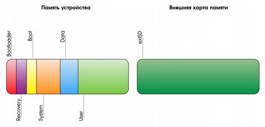

Надо разобраться, что конкретно обозначают термины recovery, bootloader, twrp и т. д.
Для начала нужно знать, как происходит загрузка стандартного Android-устройства. Цепочка загрузки примерно следующая:
ROM -> aboot -> ядро -> система Android
Где:
Вроде как, на флешке телефона, помимо раздела с aboot есть, как минимум, еще два раздела, которые условно называются boot и recovery.
Структура раздела boot не совсем обычна. Сам раздел boot не содержит никакой файловой системы, а представляет собой сжатые с помощью gzip и записанные друг за другом ядро и RAM-диск, предваренные небольшим заголовком размером в два килобайта (он содержит опции загрузки ядра, а также адреса расположения образов и другую информацию). RAM-диск, в свою очередь, представляет собой небольшую виртуальную файловую систему, содержащую набор каталогов, к которым Android подключит файловые системы других разделов (system, data, sdcard), а также систему и скрипт инициализации и init.rc. RAM-диск загружается прямо в ОЗУ и продолжает существовать все время, пока смартфон включен.
Карта разделов Android
Примерная карта разделов, используемых в Android, выглядит так:

Что такое bootloader?
Обычно бутлоадером называют программу-загрузчик, которая запускается из ROM, или содержимое раздела, на котором эта программа-загрузчик располагается. Так же термином bootloader называют сам раздел, на котором находится низкоуровневая программа-загрузчик.
Как было сказано выше, в разделе bootloader обычно размещается загрузчик aboot, но могут размещаться и другие загрузчики.
Иногда можно встретить термин Reboot to bootloader. Что он обозначает? Ведь при перезагрузке всегда после ROM запускается содержимое раздела bootloader. Оказывается, этот неудачный термин означает, что после перзагрузки bootloader будет запущен в режиме запуска ffastboot mode. То есть, загрузка дальше не пойдет, а будет работать модуль fastboot и ожидать подключения с компьютера по USB-кабелю.
Что такое fastboot?
Ключевой особенностью aboot является то, что эта программа-загрузчик имеет модули, которые могут даже работать параллельно друг другу. Один из таких модулей - fastboot. Он позволяет подключиться к телефону по USB-кабелю и произвести действия над разделами Flash-диска через консольную утилиту, которая тоже называется fastboot. Например, можно записать на выбранный раздел заданный образ:
$ fastboot flash recovery образ-recovery.img
А можно даже дать команду продолжения загрузки, но не просто перепрыгнуть на раздел boot или recovery, а продолжить загрузку, используя переданный образ:
$ fastboot boot образ-recovery.img
Внимание! Многие команды fastboot не будут работать если загрузчик залочен. Для полноценного использования fastboot надо сначала провести процедуру разлочивания загрузчика телефона, и только после этого появится возможность плоноценно пользоваться модулем fastboot.
Что такое recovery?
Раздел recovery имеет точно такую же структуру что и раздел boot, но в нем записано ядро и RAM-диск с таким содержимым, чтобы после запуска ядра запустилась на исполнение только одна команда /sbin/recovery.
Содержимое раздела со стандартным (стоковым) recovery очень простое. Все, что содержится в архиве RAM-диска, — это исполняемый файл /sbin/recovery и (не всегда) набор фоновых изображений в каталоге /res или любом другом. При загрузке ядро Linux запускает /sbin/recovery, а тот выводит на экран простенькое меню, с помощью которого можно установить прошивку, подписанную цифровым ключом производителя, или произвести сброс до заводских настроек.
Что такое custom recovery (кастом рекавери)?
Используя модуль и утилиту fastboot, можно на раздел recovery записать нестандартный образ recovery, который будет содержать нестандартную recovery-программу. Этот нестандартный образ, и эта нестандартная программа называется термином custom recovery.
Что такое TWRP и CWM?
TWRP и CWM - это различные реализации custom recovery от разных команд разработчиков. Имеют схожую функциональность, но разные возможности и разные пользовательские интерфейсы. Некоторые мамкины телефонные ремонтники без зазрения совести называют TWRP или CWM бутлоадерами, но это не так, и только вносит путанницу в терминологию. Когда говорят о TWRP и CWM - это образы custom recovery,